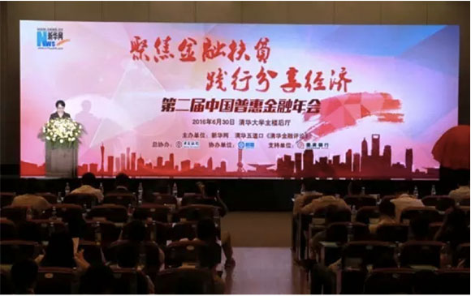
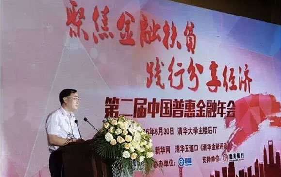
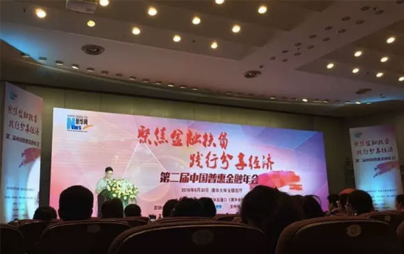
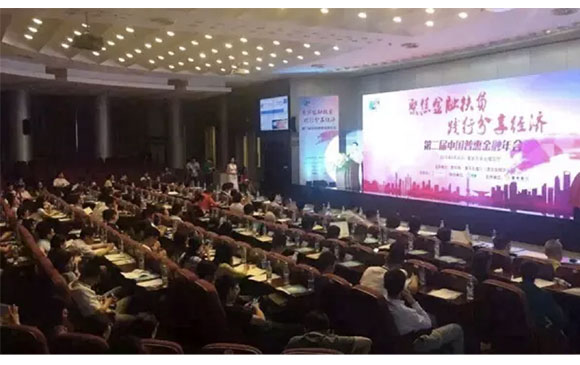

6月30日，新华网联合清华五道口《清华金融评论》举办的第二届中国普惠金融年会在北京清华大学举行。本次年会的主题是“聚焦金融扶贫 践行分享经济”。会议邀请政府领导、业内专家、国内外金融名企代表等百余名嘉宾现场交流互动，为“十三五”扶贫攻坚建言献策，汇中受邀出席此次会议。
李克强总理在2016年政府工作报告中提出，要大力发展普惠金融。今年第十二届全国人民代表大会第四次会议审议通过的“十三五”规划明确提出了发展普惠金融和多业态中小微金融组织。这是普惠金融首次被纳入国家五年规划的建议，对行业定性起到了关键作用，普惠金融将迎来黄金发展期。
作为“十三五”开局之年，本次年会旨在积极寻找2016年普惠金融的最佳商业模式，探索服务弱势群体的长效机制，不断满足农民、小微企业的金融服务需求。同时，作为全面建成小康社会决胜阶段的起步之年，本届年会邀请监管部门，金融机构及业内专家围绕金融扶贫、分享经济等普惠金融话题积极建言献策。
 （新华网副总裁魏紫川）新华网副总裁魏紫川在致辞中表示，发展普惠金融，将金融资源更多向普惠层面供给，构建有效完善的普惠金融供给体系，就是要构建多层次、广覆盖、有差异的普惠金融服务体系，形成包括各类金融组织机构及新华网等新闻媒体在内的分工协作、互补竞合、共生共荣的金融生态圈。
 （清华五道口金融学院党委副书记赵岑）清华五道口金融学院党委副书记兼副院长赵岑在致辞中表示，最近几年随着互联网金融的快速发展，互联网金融正向时代的“鲶鱼”一样，在打破传统的金融体系和相应的服务，面向客户的体验，提供了更加优质、及时、高效的普惠金融实践。
 （会议现场）会上，汇中代表与参会嘉宾进行了深层次的交流，在践行普惠金融服务方面，汇中代表表示，在过去几年，汇中一直以普惠金融为主要业务体系，现逐步发展为一家以综合金融为主、产融结合的全球化综合金融企业。目前，汇中已在北京、上海、广州、深圳等全国百余座城市设有近300家分公司；在纽约、伦敦、东京、香港等地设有海外分支机构，全力构建全球化金融生态圈。
联合国开发计划署(UNDP)、中国国际经济技术交流中心、汇中就“在中国构建普惠金融体系”项目契机，开设了“互联网金融创新”子项目。该子项目着力于对互联网金融监管政策与创新实践的研究与交流，并引入国际案例以推动互联网金融行业在中国的合规与创新发展。汇中将为互联网金融行业合规发展提供更为有利的引导与保障。同时，助推中国普惠金融体系的完善与合规发展，真正实现中国普惠金融与世界的接轨。
2016年作为汇中转型发展的关键年，公司上下正紧锣密鼓地围绕创“有中国影响力的综合金融服务机构”的战略目标，并基于系统化、前瞻性的实施策略，合规发展，稳步前行。